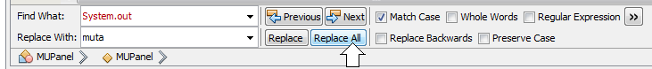

- Create a new NetBeans Java Application project named LAB4 in your
CSC120 folder. Right-click on the following file and save it
in the src folder of your new project.
Open this file in NetBeans and look at the code. This class has a constructor method (as all
classes must have), along with a toString method. Also, notice that there are
"getter" and "setter" methods for each of the private properties of the class, and notice the
different data types of the private data members – name and type
are String objects, while price is a Double
variable and quantity is an Integer.
- Let's look at a main program that declares, instantiates and uses methods from the
ClothingItem class. Right-click on the following file and save it
in the src folder of your new project.
Open this file in NetBeans, and edit the comment header at the top of the file so that your name
replaces "Sammy Student". Also modify the "setName" method in the MUPanel constructor method
to use your name instead of Sammy's. Notice that we declare six (6) ClothingItem objects
at the top of the class definition. In the MUPanel constructor, we instantiate
the six objects and then call a method named workWithClothingItems -- this method
must be defined later in our class definition. The paintComponent just draws a
string that tells the user to look in the Java Console for the results of the program. Run
the program now and look at the results below the editor window in your NetBeans IDE.
All the work in this program is being done in the workWithClothingItems method.
Notice that there are a series of System.out.println statements in this method —
each time one of these statements is executed, a line of output is printed in the Java Console.
See if you can determine why each System.out.println statement produces
its corresponding line of output in the Java Console. Ask your instructor for an explanation
if you cannot figure out how the output is produced by this code.
- A nagging little problem in Java arises when we want to use
Double numeric values to represent
currency amounts (dollars and cents). By default, Java programs print only as many decimal places
as are needed to represent the actual value, so if you take a close look at the output of the program
you just ran, you'll notice that several of the prices are printed with only 1 digit to the right of the
decimal point. To force Java to print currency values with two decimal places every time to represent
cents, and automatically round long decimals to two decimal places, we can use a technique that involves
the NumberFormat class. To see how this works,
copy the following line and paste it into the ClothingItem.java file as the new first line in the
toString method:
DecimalFormat currency = new DecimalFormat("#.00");
Netbeans will underline "DecimalFormat" as if it is an error, but to fix that, click the light-bulb icon
in the left margin of the line and choose "Add import for java.text.DecimalFormat". Then, to use
this new format, change the end of the assignment statement in the toString method to be:
+ " at a price of $" + currency.format(price);
Run the program now and you should see trailing zeros in the dollar amounts that are printed by the
toString method.
This technique was used in the workWithClothingItems method of the
MUPanel.java file — can you find the two places in that method that use the
currency.format(...) notation to print value that represent price data?
Ask your instructor for help if you can't
figure out all the places where currency.format(...) is called.
- Right-click on the src folder of your project in the NetBeans file tree in the upper-left
panel of the IDE, and choose "New | Java Class" to create a new class file in your project –
use the name Coffee for this new class file.
- Each
Coffee object will have three properties: size which is a
String, ounces which is an Integer, and price which is a
Double. Declare these three properties in the correct location in the
Coffee class definition. Refer to the ClothingItem class definition for
an example of declarations.
- The constructor method of the
Coffee class should accept three parameter values of the
appropriate types, and store the parameter values in the properties of the class.
Refer to the ClothingItem class definition for
an example of writing a constructor method.
- Write three "getter" methods in the
Coffee class, one for each of the private data
members of the class. "Getter" methods do not accept any parameters, and return a value
that is the matching data type of the property.
Refer to the ClothingItem class definition for
examples of how to write "getter" methods.
- Write three "setter" methods in the
Coffee class, one for each of the private data
members of the class. "Setter" methods accept one parameter of the same data type as the
matching property, and return nothing (that means the return type of a "setter" method
is void).
Refer to the ClothingItem class definition for
examples of "setter" methods.
- Write a method named "calculatePricePerOunce" in the
Coffee class. This method
returns a Double value and accepts no parameters. The answer calculated and
returned by this method should use the price and ounces properties to
be the price per ounce for this Coffee object. Refer to the "calculateTotalSpent"
method of the ClothingItem class for an example of how to write a method that calculates
an answer using properties of the object.
- Write a
toString method for the Coffee class. A
toString method does not accept any parameters, and returns a String value
that is the concatenation of all of the data items in the class, with explanatory String
literal values in quotes between the data items.
Refer to the ClothingItem class definition for
an example of a toString method. The result of your toString
method should look like this (the red text represents the values of the properties (private data
members) of
the object:
a Coffee object with size = Grande (16 oz.) and price = $7.00
Be sure to use the currency.format(...) technique when printing the price so that monetary
amounts are always displayed with two decimal places to the right of the decimal point, as seen in step
3 of these lab directions.
- In the
MUPanel.java file, declare 5 Coffee objects, using the names
cup1, cup2, up to cup5. In the MUPanel
constructor method, instantiate these objects using the following data:
| |
Size |
Ounces |
Price |
| . . . for cup1: |
Tall |
12 |
6.00 |
| . . . for cup2: |
Venti |
20 |
8.00 |
| . . . for cup3: |
Grande |
16 |
7.00 |
| . . . for cup4: |
Demi |
3 |
2.70 |
| . . . for cup5: |
Short |
8 |
4.00 |
- Copy the following code and paste it into the MUPanel.java file immediately before the
comment that says "Do NOT change or delete anything below here!":
public void workWithCoffeeObjects() {
DecimalFormat currency = new DecimalFormat("#.00");
System.out.println("=======================================");
System.out.println("cup1: " + cup1.toString() );
System.out.println("cup2: " + cup2.toString() );
System.out.println("cup3: " + cup3.toString() );
System.out.println("cup4: " + cup4.toString() );
System.out.println("cup5: " + cup5.toString() );
System.out.println();
System.out.println("The price of " + cup3.getSize() + " is $"
+ currency.format( cup3.getPrice() - cup4.getPrice() )
+ " more than the price of " + cup4.getSize() );
System.out.println(cup2.getSize() + " contains " + (cup2.getOunces() - cup1.getOunces())
+ " oz. more than " + cup1.getSize() + " contains");
//***********************
//* PRINT THE PRICE PER OUNCE OF cup2 AND cup4
//* USE THE calculatePricePerOunce METHOD DO TO THIS
//***********************
Double pricePerOunce;
pricePerOunce = cup2.calculatePricePerOunce();
System.out.println("Price per ounce for " + cup2.getSize() + "=$ " + currency.format(pricePerOunce) );
pricePerOunce = cup4.calculatePricePerOunce();
System.out.println("Price per ounce for " + cup4.getSize() + "=$ " + currency.format(pricePerOunce) );
//***********************
//* REDUCE THE PRICE OF THE cup1 and cup5 OBJECTS TO 25% OF WHAT THEY WERE
//* USE THE setPrice AND getPrice METHODS DO TO THIS
//***********************
System.out.println();
System.out.println("After reducing the prices,");
System.out.println("cup1: " + cup1.toString() );
System.out.println("cup2: " + cup2.toString() );
System.out.println("cup3: " + cup3.toString() );
System.out.println("cup4: " + cup4.toString() );
System.out.println("cup5: " + cup5.toString() );
} // end of workWithCoffeeObjects
- Insert a statement as the new last statement in the
MUPanel constructor that calls the
workWithCoffeeObjects method. It's the same as the
"workWithClothingItems" method call
that's currently the last statement in the constructor. The workWithCoffeeObjects
method accepts no parameters.
Run the program and examine the first 9 lines of output – the sixth through ninth lines
of output should have
the correct information for the difference of the prices and ounces for the various sizes of
coffees and the prices per ounce.
-
System.out.println works well for displaying lines of text in the Java Console, but
an inconvenient thing about the statement is the small size of the Java Console and the need to
scroll up and down to see output that consists of more than a few lines. It would be convenient
to have a way to display lines of text in the Graphical Output window. Later in the semester,
we'll learn techniques for doing that, but at this point, we've written code to allow you to
add an object called a MUTextArea that works the same way System.out works,
but displays the text in the Graphical Output window.
Find the line in the MUPanel constructor method that says
"setPreferredSize(new Dimension(250,100));" and change the numbers so that the
preferred size is 800 x 600. Next, right-click on the following file and save it
in the src folder of your project.
Copy the following line and paste it into the MUPanel.java file in the private declarations
section of the file:
private MUTextArea muta;
Then copy the following lines and paste them into the MUPanel.java constructor method right after the line that
sets the background color to WHITE:
muta = new MUTextArea();
muta.setBounds(10, 10, 780, 580);
add(muta);
Whew! Now we're ready to change EVERY System.out.println statement in the program
to a muta.println statement. Instead of a lot of typing, we can use the "Replace"
feature of the "Edit" menu to change all the lines at once. Choose
Edit | Replace...
from the NetBeans top menu, and in the dialog box that appears, fill in the "Find What:" field with
System.out, fill in the "Replace With:" field with muta, and click the "Replace All"
button. Here's a screenshot of what this looks like:

Now run the program and observe that the output is now displayed in a TextArea on the screen. Much
more convenient than the Java Console, no?
- After the comment in the
workWithCoffeeObjects method, insert code that will set
the prices of cup1 and cup5 to be 25% of what they were. To do this, call
setPrice and getPrice for each of the objects, and use the proper
calculation to determine what is 25% of the old price. See the workWithClothingItems
method for an example of how to do this. DON'T DO THE MATH IN YOUR HEAD -- make the computer
carry out the calculation by using arithmetic operators in Java.
When you run the program now, the last 5 lines output should show prices that are 25% of their
original values for cup1 and cup5, with the others being the same as
they were originally.
- Run your program and obtain a screen capture of the window that includes the title in the frame that
shows your name, and save the capure as a .png file.
- Using Windows Explorer, browse to your CSC120 folder, right-click on the Lab4 folder, choose
"Send to | Compressed (zipped) folder", and make sure the name of the zip file is Lab4.zip.
- Submit the .zip file and the screen capture .png file to the Lab4 dropbox in D2L.